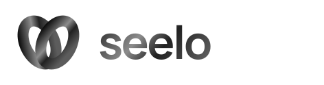
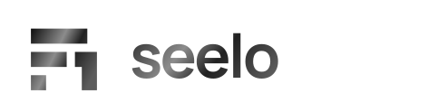
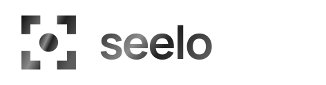

폰트 5안 + 기하학 심볼 10안. 각 방향을 검정 단색(A), 흰색 반전(B), 흑백 그라데이션(C)으로 비교하세요.
마음에 드는 방향은 왼쪽 체크박스로 표시하세요. 로고를 클릭하면 원본 SVG가 열립니다.
단단한 산세리프 · ExtraBold
각진 디테일 · Bold
원형에 가까운 골격 · Medium
획 대비가 큰 세리프 · Regular
정밀한 고정폭 · Medium
두 개의 반원으로 만든 S
발견의 순간 · 시선과 중심
위치 핀과 열린 원
가게의 입구 · 열린 가능성
겹쳐지는 두 시선

쌓여 올라가는 노출 신호


다섯 개의 모듈로 쓴 S
기울어진 고리와 발견점
seelo의 ee를 심볼로
프레임 안에서 발견되는 가게

아직 선택한 안이 없습니다. ‘선택한 안만 보기’를 끄고 번호 옆 체크박스로 골라주세요.